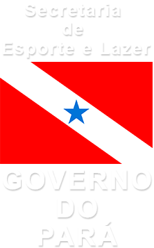

Rio de Janeiro | Posto 11
Recreio
Wow, that day in the Recreio waves were in good conditions. That season was perfect, I remember like it was today. I can not wait to face again those rights.

Araguari | Amapá /
Pororoca
The moment this photo was amazing, just when I looked to the side and saw the foam growing and approaching, and at the same time scared for my friends who jumped from the boat stayed behind. I ended up alone and surfing for a few minutes. it was amazing.

Rio de Janeiro | Canto do Recreio /
Canto do Recreio
When I sat down and saw the series of waves in my second yard, I could not let go unchallenged. I did not think twice, a swell came sweeping the corner of the Recreio, and with all pleasure, I surfed all day!
DetailsBrasil | Rio de Janeiro /
Arpoador
Meditate a bit before training, and thank the beauty of this scenario. Rio de Janeiro always an exciting place to train and compete the best Bodyboard Championships. The Rio remains always beautiful!
DetailsPará | Mosqueiro /
Marahú
Here is my sea of fresh water. A beach river rolling high waves, that's right, high waves in the month of September to December. It is an hour from the city of Belém and called beach Marahú.
Details Raphael Figueiredo Sepe
Raphael Figueiredo Sepe{kind=link}
{kind=link}
{kind=link}
{kind=link}
{kind=link}
About Me
A little about myself. Born in the land of Açai where in June the Carimbo becomes our state anthem. My life turned very early on in search of the best waves, I know I still have a lot to know and explore in this planet we call home, but I just have to thank the great experiences that I had so far. Already I faced several times the Pororoca, and I confess I still feel a chill in the belly only the thought of facing this force of nature every season I spend it there. Very thank to my family for always supporting me in full trajectories of challenges and achievements, including my beautiful children who mean everything to me, and always serve as inspiration for me to continue challenging obstacles that might appear on my daily routine. What else motivates me to keep challenging, often situations that at first seem difficult to overcome, and so I can reach my ultimate goal, is the idea that in the end, what seemed impossible at first, proved a great opportunity in my life. And I am very grateful to have a family that supports me in the decisions I take, and I also thank my great friends I made throughout this great adventure that surfing provides in my life.
Travel
Click on the image to enlarge
Interview
Interview
March/27/2015 Pará - Brazil
Kung Bodyboard Xandinha proved once again that there is also perfect wave off the beach. Between 19 and 25 March, she rode with category in Pororoca of São Domingos do Campim, Pará, Northern Region, accompanied by more than 50 other athletes, not only the Bodyboard. Together and under indescribable adrenaline, hit the largest Brazilian record number of people taking the same wave of Pororoca. "The birth of a Pororoca is like the birth of my children. to this day I have not seen anything more beautiful”, Xandinha say with certainty. "It's against the force of the sea and the river, pulling you from one side to the other. Since when you see the white foam coming on the horizon, the heart speeds up already with everything. We have to study very well the circumstances of that encounter, even before entering the water. We need psychological preparation to face. Be there, ready to take risks, hearing that loud noise, not sure what awaits you is a wave of five meters or one meter ... it's awesome!". The phenomenon provides the bodyboarder unparalleled sensations.
Ride the Pororoca is Satisfaction.
Interview
March/11/2015 Araguari - Brazil
Magazine: Ride It. Festival to be held from 19 to 23 March in São Domingos do Capim-PA. With the approach of the months of March to June, it is the most fertile period of the waves. The meeting of sea and river will create the mighty waves, delighting all athletes who practice sport in the water. "It will be an honor to participate in this Record. It all began in the Pororoca of São Domingos do Capim in 2007 when I was the attraction of the Festival, and since then never stopped. The experience was amazing and I ended up falling in love with this wave surfed in the woods, which are few. This record will be very good for my resume, I'm already known as the forerunner of Bodyboarding in Pororoca of Brazil, of course I'm super excited to take the Record the French Festival which will not be too bad. I'm watching in the "Indonesia and China, She added". The athlete hits the road soon for the Festival and has the Co-Sponsor by Salão Studio da Praça / Secretaria de Esporte e Lazer – Seel – PA / Apoio do Biquíni Bela Rosa / Raizes T-Shirts / Craud e ABRASPO.
Xandinha Ereiro in the Guinness Book
Interview
May/16/2015 São Paulo - Brazil
Website: Craud. The athlete Alexandra Ereiro participated this past weekend in the Pernambuco Beach in Guaruja, coast of São Paulo, the 1st Stage of the Paulista Circuit Bodyboard 2015. Participated on 16 and 17 May on the beach of Pernambuco - Guaruja - SP for the 1st time the 1st Stage of the Paulista Circuit Bodyboard 2015.I am very happy to get to the end and ensure the 3rd place in Open Female, in which only had Professionals. This was my best result after I became professional in 2014.In his first official competition this year Alexandra goes up on the podium and won the third step, and add points in the rankings of the Association.I attended this weekend of 1st Stage of the Paulista Circuit Bodyboard 2015 and won 3rd place in the category.I would like to congratulate all the athletes who competed, the guys who honored the stage and the organizers of the event, and my support, the SEEL, to Studio Da Praça Cabelo e Estética, the Raízes T-shirts, the Bela Rosa Téxtil, to site Craud.net and Alex Costa - commented 'xandinha' to the site.
Xandinha Makes Podium in Guaruja
Interview
March/03/2015 Pará - Brazil
Website: Waves. The bodyboarder Alexandra Ereiro, better known as Xandinha, was invited to participate in the World Record in the Pororoca, festival to be held between 19 and 23 March in São Domingos do Capim (PA). With the approach of the months from March to June, comes the most fertile period of the waves. "It will be an honor to participate in this Record. It all began in the Pororoca of São Domingos do Capim, in 2007, when I was attraction of the Festival, and since then I never stopped. The experience was amazing and I ended up falling in love with this wave surfed in the woods, and are few. I'm already known as the forerunner of boadybording in the Pororocas of Brazil. Will be several surfers in this wave. I believe that this year I will surf others Pororocas outside Brazil, I'm watching in Indonesia and China”. The athlete hits the road soon for the Festival and has co-sponsored by Salão Studio da Praça, Secretaria de Esporte e Lazer – Seel – PA; support of bikinis Bela Rosa, Raizes T-Shirts, Craud e ABRASPO.
World Record in the Pororoca
Interview
March/06/2015 Pará - Brazil
Website: Surfguru. Festival to be held from 19 to 23 March in São Domingos do Capim-PA. With the approach of the months of March to June, it is the most fertile period of the waves. The meeting of sea and river will create the mighty waves, delighting all athletes who practice sport in the water. "It will be an honor to participate in this Record. It all began in the Pororoca of São Domingos do Capim in 2007 when I was attraction of the Festival, and since then I have never stopped. The experience was amazing and I ended up falling in love with this wave surfed in the woods, which are few. This record will be very good for my resume, I'm already known as the forerunner of Bodyboarding in Pororoca of Brazil, of course I'm super excited to take the Record the French Festival which will not be too bad. I'm watching in the the "Indonesian and China", she added. The athlete hits the road soon for the Festival and has the Co-Sponsor of the Salão Studio da Praça / Secretaria de Esporte e Lazer – Seel – PA / support of bikini Bela Rosa / Raizes T-Shirts / Craud e ABRASPO.
Xandinha Ereiro in the Guinness Book
Interview
March/06/2015 Pará - Brazil
Website: Progressivo. Cuando uno se imagina el río amazonas, no se logra dimensionarlo, creo que hay que ir para tener una idea real… uno solo piensa Agua, árboles, pirañas y lodo… en la duda y la investigación encontré a Alexandra Ereiro “Bodyboard Xandinha” quien es una bodyboarder profesional Local de Pororocas, es decir es bodyboarder de Río, del Río Amazonas!! cuando supe esto me entró la duda que asumo todos deben de tener en este momento, ¿que tal será? “Bodyboard Xandinha” nos cuenta y nos instruye un poco: La palabra POROROCA proviene del tupí – taladro pororoka, lo que significa rugido que se da por el fenómeno de la mezcla entre las aguas del mar con las aguas de la desembocadura del río. No se puede hablar sin pensar en el poder del río Amazonas. Este fenómeno del Amazonas durante muchos años ha sido un reto para la inteligencia de aquellos que trataron de explicarlo. En la Amazonía, todo está bien: grande y diferente, fascinante y complicado. Pero en ninguna parte del mundo se da este fenómeno de manera tan intensa como en la costa de Amapá y Pará.
Bodyboarding Amazônico
Interview
April/03/2013 Fernando de Noronha - Brazil
Website: Waves. How I love surfing, I decided to meet Fernando de Noronha (RN). I spent eight days in this beautiful island, tall hollow waves and blue water. I landed in Noronha and took a ride to the house I shared with my friend, the bodyboard Patricia Setúbal. In the first surf day we know the beach Cacimba do Padre. The sea was classic, with 2 meter series. In Cacimba do Padre and Conceição, the waves broke with series 2.5 to 3 meters, the only one to face this big swell in the Cacimba do Padre was the big rider Aldemir Calunga. On the fourth day the sea dropped and I enjoyed making a few clicks of the surfers and the beautiful look of the place. I took great waves, tubes, maneuvered, I was struck by the immensity of the island, with beautiful landscapes - trying to shoot everything I could. I want to thank the team of Ceara - François, the shaper Massara, Pedro Edson, Edson Alexandre, Loyola, Pará, Patricia Setúbal and Victor. Thank my co-sponsors, the Studio da Praça, the Seel; my support, the Insane, the site Craud and Garota Tropical. That's it, guys, soon more surf trips to Brazil.
In the waves of Noronha
News
August/03/2015 My Website - Release
Website: Craud. Hello my friends from the Craud.net It is with great joy that I come firsthand announce my newest website, a portfolio my online. And became things even easier. You can read my stories, get some contacts of my support as: swimsuit brand rubber, bikini accessories, beauty salon, bodyboard board, surf site and stay on top of all the events that I will be present. Follow news about my athlete's life and 'freesurf' with photos, videos, texts, trips and Pororoca. A corner only ours to facilitate contact and create that bond of friendship to continue in my profession as an athlete, and for future projects. That's it, do not miss visiting. The website is very cool and fun. Be welcome! Athlete: Studio da Praça/ Raizes T – Shirt/ La Isla/ Bela Rosa/ Seel /Craud.net /ABRASPO Website: Xandinha.com
Website: xandinha.com
News
September/08/2015 My Sea of Fresh Water #1
Website: Surfguru. "I decided to explore some river beaches in my state. This is the first part of a series call "My Sea of Fresh Water". The first day was on the island of Mosqueiro, on the beach of Marahú, at the peak of Paysandu. TS waves were very small, powerless and little wind during the day, but this year promises pumping high waves on the island. - You might wonder... "Hey"!? - What do you mean Xandinha a beach river rolling wave - That's right! Because it's near the sea, Mosqueiro has beaches with tides and waves, and has several peaks to practice surf. Just by the strong movement of the waters, the island became quite popular, the waves have come up to 1.5m tall at its best days (4 to 5 feet)."I'm really excited to get Mosqueiro working. The tidal waves surprise me. I have surfed on the beach of Farol, a large hole, which gave to do several strong moves, it's fantastic." Wait new photo galleries on other peaks of the island of Mosqueiro. Good waves and see you soon! I have the support of Bela Rosa, Seel, Raizes T – Shirts, La Isla e do site Craud.net
My Sea of Fresh Water #1
News
September/16/2015 My Sea of Fresh Water #2
Website: Waves. "On Tuesday, September 8, a day after the Homeland Week holiday, closed again a trip to the 'Moca'. With destiny to bucolic Mosqueiro, capital of the district, to surfing and catalog a new subject for the second part of the story “My Sea of Fresh Water”. We went straight check the Farol beach, beach that I mentioned in the first part of this series, and where the waves are very good because of the unique background of break point. When it is good, the farol comes to break with waves up to 1.5 meters tall, complete with hollow tubes, which draws a lot of attention for those who practice surfing, the bodyboard and kite surf. We surfed for just an hour and a half but gave to do ours head, and good records of this incredible phenomenon, unique in our coast: Beach surf in freshwater". Many thanks to all who follow my work. I would like to thank God and my family for all that has been going on in my career. Good waves and see you soon! Support: Kpaloa, Bela Rosa, SEEL, Raízes T shirts, La Isla e site Craud.net.
My Sea of Fresh Water #2
News
Octuber/5/2015 Alexandra Ereiro na 360° Clothing
Website: Craud.net. "Xandinha, has new support.The athlete has in the resume the champion title Kpaloa Circuit in 2006, participated in various stages of the Brazilian and World Tour. In 2015 she returned strong, won the 3rd place in stage 1 of the São Paulo circuit. Is currently bags ready to compete in the 2nd stage of the Santa Catarina Circuit, on 17 and 18 October in Florianópolis. - “I am very happy to close this partnership with the brand 360° Clothing of Portugal. It is an innovative brand in the market and has a great passion for Bodyboard, and is totally in line with the athletes and has the commitment to fight for the development of this modality. I have a beautiful project called “My sea of fresh water”, that is to show the freshwater beaches of my state”. I want to thank my family, website Craud.net for their support, my supports, and also thank the brand 360° Clothing for believing in me, I'm sure I will well represent the company both here in Brazil, as outside. Many thanks to 360° Clothing. Supports: Seel/ Kpaloa/ Bela Rosa/ Craud.net.
Alexandra Ereiro at 360° Clothing
Interview
March/11/2015 Araguari - Brazil
Magazine: Ride It Festival to be held from 19 to 23 March in São Domingos do Capim-PA. With the approach of the months of March to June, it is the most fertile period of the waves. The meeting of sea and river will create the mighty waves, delighting all athletes who practice sport in the water. "It will be an honor to participate in this Record. It all began in the Pororoca of São Domingos do Capim in 2007 when I was the attraction of the Festival, and since then never stopped. The experience was amazing and I ended up falling in love with this wave surfed in the woods, which are few. This record will be very good for my resume, I'm already known as the forerunner of Bodyboarding in Pororoca of Brazil, of course I'm super excited to take the Record the French Festival which will not be too bad. I'm watching in the Indonesia and China, "She added. The athlete hits the road soon for the Festival and has the Co-Sponsor by Salão Studio da Praça / Secretaria de Esporte e Lazer – Seel – PA / Apoio do Biquíni Bela Rosa / Raizes T-Shirts / Craud e ABRASPO.
Xandinha Ereiro in the Guinness Book
May/16/2015 São Paulo - Brazil
Craud.net: The athlete Alexandra Ereiro participated this past weekend in the Pernambuco Beach in Guaruja, coast of São Paulo, the 1st Stage of the Paulista Circuit Bodyboard 2015. participated on 16 and 17 May on the beach of Pernambuco - Guaruja - SP for the 1st time the 1st Stage of the Paulista Circuit Bodyboard 2015.I am very happy to get to the end and ensure the 3rd place in Open Female, in which only had Professionals. This was my best result after I became professional in 2014.In his first official competition this year Alexandra goes up on the podium and won the third step, and add points in the rankings of the Association.I attended this weekend of 1st Stage of the Paulista Circuit Bodyboard 2015 and won 3rd place in the category.I would like to congratulate all the athletes who competed, the guys who honored the stage and the organizers of the event, and my support, the SEEL, to Studio Da Praça Cabelo e Estética, the Raízes T-shirts, the Bela Rosa Téxtil, to site Craud.net and Alex Costa - commented 'xandinha' to the site.
Xandinha Makes Podium in Guaruja
March/03/2015 Pará - Brazil
Website: WAVES The bodyboarder Alexandra Ereiro, better known as Xandinha, was invited to participate in the World Record in the Pororoca, festival to be held between 19 and 23 March in São Domingos do Capim (PA). With the approach of the months from March to June, comes the most fertile period of the waves. "It will be an honor to participate in this Record. It all began in the Pororoca of São Domingos do Capim, in 2007, when I was attraction of the Festival, and since then I never stopped. The experience was amazing and I ended up falling in love with this wave surfed in the woods, and are few. I'm already known as the forerunner of boadybording in the Pororocas of Brazil. Will be several surfers in this wave. I believe that this year I will surf others Pororocas outside Brazil, I'm watching in Indonesia and China”. The athlete hits the road soon for the Festival and has co-sponsored by Salão Studio da Praça, Secretaria de Esporte e Lazer – Seel – PA; support of bikinis Bela Rosa, Raizes T-Shirts, Craud and ABRASPO.
World Record in the Pororoca
March/06/2015 Pará - Brazil
Website: Guru Festival to be held from 19 to 23 March in São Domingos do Capim-PA. With the approach of the months of March to June, it is the most fertile period of the waves. The meeting of sea and river will create the mighty waves, delighting all athletes who practice sport in the water. "It will be an honor to participate in this Record. It all began in the Pororoca of São Domingos do Capim in 2007 when I was attraction of the Festival, and since then I have never stopped. The experience was amazing and I ended up falling in love with this wave surfed in the woods, which are few. This record will be very good for my resume, I'm already known as the forerunner of Bodyboarding in Pororoca of Brazil, of course I'm super excited to take the Record the French Festival which will not be too bad. I'm watching in the the "Indonesian and China", she added. The athlete hits the road soon for the Festival and has the Co-Sponsor of the Salão Studio da Praça / Secretaria de Esporte e Lazer – Seel – PA / support of bikini Bela Rosa / Raizes T-Shirts / Craud e ABRASPO.
Xandinha Ereiro in the Guinness Book
March/06/2015 Pará - Brazil
Website: Progressivo Cuando uno se imagina el río amazonas, no se logra dimensionarlo, creo que hay que ir para tener una idea real… uno solo piensa Agua, árboles, pirañas y lodo… en la duda y la investigación encontré a Alexandra Ereiro “Bodyboard Xandinha” quien es una bodyboarder profesional Local de Pororocas, es decir es bodyboarder de Río, del Río Amazonas!! cuando supe esto me entró la duda que asumo todos deben de tener en este momento, ¿que tal será? “Bodyboard Xandinha” nos cuenta y nos instruye un poco: La palabra POROROCA proviene del tupí – taladro pororoka, lo que significa rugido que se da por el fenómeno de la mezcla entre las aguas del mar con las aguas de la desembocadura del río. No se puede hablar sin pensar en el poder del río Amazonas. Este fenómeno del Amazonas durante muchos años ha sido un reto para la inteligencia de aquellos que trataron de explicarlo.
Bodyboarding Amazônico
March/27/2015 Pará - Brazil
Kung Bodyboard Xandinha proved once again that there is also perfect wave off the beach. Between 19 and 25 March, she rode with category in Pororoca of São Domingos do Campim, Pará, Northern Region, accompanied by more than 50 other athletes, not only the Bodyboard. Together and under indescribable adrenaline, hit the largest Brazilian record number of people taking the same wave of Pororoca. "The birth of a Pororoca is like the birth of my children. to this day I have not seen anything more beautiful”, Xandinha say with certainty. "It's against the force of the sea and the river, pulling you from one side to the other. Since when you see the white foam coming on the horizon, the heart speeds up already with everything. We have to study very well the circumstances of that encounter, even before entering the water. We need psychological preparation to face. Be there, ready to take risks, hearing that loud noise, not sure what awaits you is a wave of five meters or one meter ... it's awesome!". The phenomenon provides the bodyboarder unparalleled sensations.
Ride the Pororoca is Satisfaction.
April/03/2013 Noronha - Brazil
Website: Waves How I love surfing, I decided to meet Fernando de Noronha (RN). I spent eight days in this beautiful island, tall hollow waves and blue water. I landed in Noronha and took a ride to the house I shared with my friend, the bodyboard Patricia Setúbal. In the first surf day we know the beach Cacimba do Padre. The sea was classic, with 2 meter series. In Cacimba do Padre and Conceição, the waves broke with series 2.5 to 3 meters, the only one to face this big swell in the Cacimba do Padre was the big rider Aldemir Calunga. On the fourth day the sea dropped and I enjoyed making a few clicks of the surfers and the beautiful look of the place. I took great waves, tubes, maneuvered, I was struck by the immensity of the island, with beautiful landscapes - trying to shoot everything I could. I want to thank the team of Ceara - François, the shaper Massara, Pedro Edson, Edson Alexandre, Loyola, Pará, Patricia Setúbal and Victor. Thank my co-sponsors, the Studio da Praça, the Seel; my support, the Insane, the site Craud and Garota Tropical. That's it, guys, soon more surf trips to Brazil.
In the waves of Noronha.
Competition
1st Stage of the Paulista Circuit Bodyboard 2015
Guaruja, Pernambuco Beach I'm super happy, I participated on 16 and 17 May the 1st Stage of the Paulista Circuit Bodyboard 2015, which I won the 3rd place.

2nd Stage of the Carioca Circuit Bodyboard 2013.
Carioca Circuit Bodyboard 2013. It was a very important year for me, my first year as a professional. Competing with the best athletes in Brazil.

Circuit Carioca
1st Stage of the Brazilian Circuit of Bodyboard 2013. Well, I lost by very little, missing one point and pregnant three months of my son Zyah. I was very confident that battery, I remember very well how I surfed quite well despite being pregnant.

Pororoca Araguari River – Amapá
3rd Bodyboard Challenge in the Pororoca Araguari River – Amapá. Event held by ABRASPO. Even took the best bodyboarders in the world, among them are: Isabela Sousa / Neymara Carvalho / Soraia Rocha / Mariana Nogueira.

Itacoatiara Beach Rio de Janeiro.
2nd Stage of UBBN Circuit. In the 1st and 2nd championship day had big waves, series two meters of wave, and was not easy. Itacoatiara is the heaviest wave in Brazil.

World Bodyboard - Rio de Janeiro
World Bodyboard Circuit. Stage of the World Circuit on the beach of Copacabana - RJ. Immediately in the arrival found several athletes from around the world, and ended up posing for a picture with some of them
Alexandra Ereiro
Bodyboard in the Pororoca, Araguari River. During the event of Bodyboard and Surf in the Pororoca in 2013. I was fortunate enough to surf this wave, she was giving the extinction signal.  Rota dos Tubos.
Rota dos Tubos.
1st Brazilian Championship of Bodyboard
In Pororoca Arari River. With the best Bodyboarders of Brazil and the world. Event organized by ABRASPO

Circuit Female of Bodyboard Kpaloa Muses
1st place in the 2nd Stage of the Tour of Bodyboard Female Kpaloa Muses Champion the stage and of circuit in the beginner category, took more than 40 girls, all who competed with me in the beginner competed in the amateur category.
Co-sponsorship
Co-sponsorship
Studio da Praça Day Bride, Make Up & Hair and Esthetics. A specialized team in taking care of your beauty. See our packages for Bride's Day: studiodapraca@outlook.com